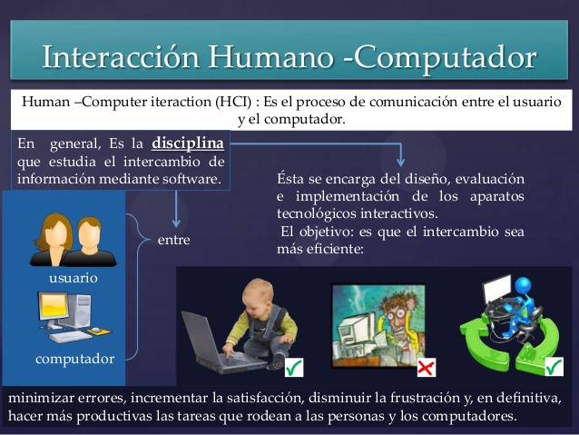

Interacción Humano Ordenador
La Interacción Humano-Computador en la actualidad está presente en cualquier software o producto y por ende es una asignatura obligatoria en todo el mundo (Abascal et al., 2001). Una interfaz es una “superficie” de contacto (Laurel & Mountford, 1990), que refleja las propiedades físicas de los usuarios que interactúan, las funciones a realizar, y el balance de poder y control. La interfaz forma parte de un entorno cultural, físico y social, y por tanto, es necesario tener en cuenta una serie de factores al momento de diseñarla. Es así como el diseño de la interfaz se ha convertido en un elemento crítico en el desarrollo de productos software y hardware, y es uno de los principales factores que influyen en el éxito y competitividad de las aplicaciones. Actualmente, los sistemas interactivos prestan una atención cada vez mayor a las interfaces, demandando cambios en el desarrollo de estos productos. Un sistema interactivo ya no es sólo juzgado por su capacidad de realizar operaciones sino también por su capacidad de comunicarlas adecuadamente al usuario.
BITECA, Revista Colombiana de Computación (2020). Interacción Humano-Computador en la Sociedad Colombiana de Computación
